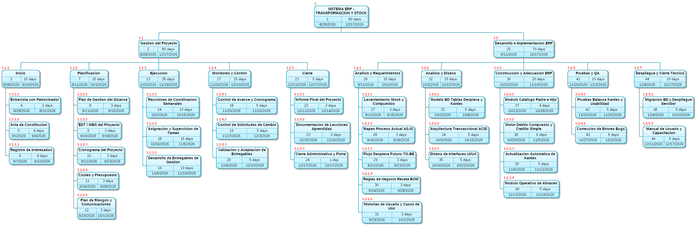

Para optimizar el control de inventarios y ventas de Casa Novedades Decor: cada combo vendido descuenta automáticamente sus componentes y deja rastro en el Kardex.
Casa Novedades Decor vende artículos de decoración sueltos y también combos armados con varios de ellos. Su ERP no relacionaba cada combo con sus componentes, y el inventario dejaba de coincidir con el almacén.
!
Problema
Al vender un combo no se actualizaba el stock de sus componentes. La tienda maneja 12 combos activos con 45 componentes, vende unos 180 combos al mes, hace cerca de 25 ajustes manuales mensuales y el 8 % de los componentes no cuadra con el conteo físico.
◎
Objetivo general
Optimizar la gestión de productos compuestos para mejorar el control y la trazabilidad del inventario, así como la eficiencia del proceso de ventas.
▣
Alcance
Adecuar el ERP existente: registrar la composición, consultarla y editarla, procesar ventas y mantener al día el inventario y el Kardex, con pruebas, documentación y capacitación.
Objetivos específicos
Analizar la gestión actual de productos compuestos para identificar deficiencias en el control de inventarios y ventas.
Diseñar un flujo estandarizado para registrar, asociar, consultar, modificar y descomponer productos compuestos.
Establecer indicadores que evalúen la trazabilidad, disponibilidad y confiabilidad del inventario tras la mejora.
Antes
Se venden 2 «Kit Mesa Navideña»: el sistema registra 2 kits, pero manteles, individuales y centros de mesa mantienen su stock. El sistema dice 14 manteles; el almacén tiene 12.
→
Con la mejora
Se valida que alcancen los componentes, se descuentan 2 manteles, 8 individuales y 2 centros, y cada salida queda en el Kardex con usuario y fecha.
Beneficios esperados
El éxito no se mide solo por terminar a tiempo: cada beneficio tiene línea base (setiembre de 2026), meta a tres meses del despliegue y un responsable de medirlo.
Indicador
Línea base
Meta (marzo 2027)
Mide
Exactitud del inventario de componentes
92 %
≥ 98 %
Almacén
Ajustes manuales de inventario por mes
25
≤ 5
Almacén
Tiempo para registrar la venta de un combo
4 min
≤ 1 min
Ventas
Ventas de combos perdidas por falta de stock
6 / mes
0
Ventas
Operaciones con usuario y fecha registrados
0 %
100 %
Responsable del ERP
Pérdida mensual por mermas y descuadres
S/ 1,200
≤ S/ 300
Patrocinador
S/ 2,400beneficio mensual estimado
16,5 mesesperiodo de recuperación
≈ 119 %retorno a tres años
Requerimientos funcionales
RF-001Registrar producto compuesto
RF-002Asociar productos individuales y cantidades
RF-003Consultar la composición
RF-004Editar la composición
RF-005Eliminar o desactivar un combo
RF-006Reporte de productos compuestos
RF-007Registrar la venta de un combo
RF-008Validar la disponibilidad de componentes
RF-009Actualizar automáticamente el inventario
Requerimientos no funcionales
RNF-001Usabilidad: interfaz fácil e intuitiva
RNF-002Seguridad: autenticación de acceso
RNF-003Control de acceso por rol
RNF-004Integridad del inventario
RNF-005Trazabilidad de operaciones
RNF-006Compatibilidad con el ERP existente
2. Presentación
Usa las flechas del teclado, los botones o desliza en el celular. Puedes verla a pantalla completa.
Gestión de Proyectos · Proyecto final
Mejora de la gestión de productos compuestos para optimizar el control de inventarios y ventas de Casa Novedades Decor
Grupo 03 · Turno Tarde · Docente: Heberht Alvan Chavez Saravia · Chincha, 2026-II
El problema
El inventario de combos no cuadraba
Stock descuadradoLa venta de un combo no actualizaba sus componentes.
Sin trazabilidadNo había un procedimiento para registrar ni desarmar combos.
Errores en la ventaSe ofrecían combos que no se podían armar.
Objetivos
Control y trazabilidad del inventario
Analizar la gestión actual de productos compuestos.
Diseñar un flujo estandarizado para registrar, asociar, consultar, modificar y descomponer combos.
Establecer indicadores de trazabilidad, disponibilidad y confiabilidad.
Se adecua el ERP existente sin afectar sus funciones (RNF-006).
EDT / WBS
50 elementos y 36 paquetes de trabajo
1. Gestión del ProyectoInicio · Planificación · Ejecución · Monitoreo y control · Cierre
2. Desarrollo e Implementación ERPAnálisis · Diseño · Construcción · Pruebas y QA · Despliegue
Más la validación final con el patrocinador (3) y el hito de cierre (4). Rediseñada en draw.io con la codificación de ProjectLibre.
Cronograma
20/08/2026 → 10/12/2026
49tareas
2hitos
16semanas
81 días hábiles. Hitos: acta firmada (31/08) y cierre del proyecto (10/12). Dependencias fin-comienzo en ProjectLibre.
Costos
Presupuesto total: S/ 39,510.00
Desarrollo e implementación ERPS/ 17,485
Gestión del proyectoS/ 14,330
Validación finalS/ 1,110
Reservas (10 % + 10 %)S/ 6,585
Tarifas del mercado peruano con sobrecosto laboral (≈ 37 %). El presupuesto inicial de S/ 1,210 solo cubría gastos operativos.
Riesgos
Los tres de mayor exposición
R-01 · 16Inventario físico distinto del registrado → conteo y conciliación.
R-02 · 15Recetas incorrectas → validar cada BOM con almacén.
R-11 · 15Sin respaldo verificado de la BD → backup diario y prueba de restauración.
11 riesgos registrados; las exposiciones ≥ 15 se escalan al comité.
Seguimiento · corte al 20/11/2026
83 % de avance, dentro de las metas
0.99SPI
0.98CPI
2 / 2cambios a tiempo
SC-01 aprobada con la reserva de contingencia; SC-02 postergada. Lección aprendida N.º 01: el control de cambios es un proceso continuo.
Equipo
Roles del proyecto
Torres Espinoza, Omar MarlonDirector del proyecto
Cueva Macedo, Junior AlbertoAdministrador del ERP
Arteaga Suarez, Herik AymarAnalista de requerimientos
Mondalgo Diaz, Jose AlexanderDesarrollador
Mosquera Garcia, Anthony EduardoCalidad y documentación
Conclusión
Conclusiones
S/ 39,510 que se recuperan en unos 16 meses con un inventario que cuadra. ¡Gracias!
1 / 11
3. Equipo del proyecto
Estudiantes del IX ciclo de Ingeniería de Sistemas, organizados según el plan de gestión de recursos humanos.
OT
Director del proyecto
Torres Espinoza, Omar Marlon
Planificación, seguimiento, riesgos, comunicaciones y cierre. Aprueba los paquetes de trabajo.
JC
Administrador del ERP
Cueva Macedo, Junior Alberto
Acceso, integración, seguridad y despliegue del ERP.
HA
Analista de requerimientos
Arteaga Suarez, Herik Aymar
Levantamiento AS-IS, flujo TO-BE, reglas BOM e historias de usuario.
JM
Desarrollador
Mondalgo Diaz, Jose Alexander
Modelo de despiece y Kardex, módulos de catálogo y almacén.
AM
Calidad y documentación
Mosquera Garcia, Anthony Eduardo
Casos de prueba, registro de errores, manual y capacitación.
DocenteHeberht Alvan Chavez Saravia
PatrocinadorJonathan Gonzales, Gerente de TI
Usuarios claveFabio Medina (almacén) y Roxana Casiano (ventas)
Ver matriz RACI
Paquete de trabajo
Director
Analista
Desarrolladores
QA / doc.
Patrocinador
Acta de constitución
R
C
I
I
A
Requerimientos y reglas BOM
A
R
C
C
I
Diseño de BD y arquitectura
A
C
R
I
I
Construcción del ERP
A
C
R
C
I
Pruebas y corrección
A
C
R
R
I
Control de cambios
R
C
C
I
A
Despliegue y capacitación
A
I
R
R
C
Aceptación y cierre
R
I
I
C
A
R: responsable · A: aprueba · C: consultado · I: informado. Cada paquete técnico tiene un respaldo: Mondalgo respalda a Cueva en el ERP y Arteaga a Mosquera en la documentación (riesgo R-07).
4. Ciclo de vida del proyecto
El estado de cada etapa se calcula con la fecha de hoy frente a la línea base. Toca una etapa para ver sus entregables.
5. Planificación
Cada plan sigue los dominios de desempeño del PMBOK 8: gobernanza, alcance, cronograma, finanzas, interesados, recursos y riesgos.
Cronograma interactivo
Las 49 tareas de ProjectLibre con el avance al 20/11/2026. La parte oscura de cada barra es lo completado. Pasa el cursor para ver fechas, avance y dependencias.
Gestión del proyecto Desarrollo ERP Hito Hoy
Ruta crítica: análisis, diseño de la BD de despiece, motor de débito compuesto, pruebas y despliegue.
Estructura de Desglose del Trabajo
50 elementos y 36 paquetes de trabajo, en draw.io con la misma codificación del cronograma. Usa el zoom o abre la vista completa.

Comité y autoridad de decisión
El comité lo integran el patrocinador, el director y el administrador del ERP. Sesiona cada quince días y, de forma extraordinaria, cuando se supera un umbral. Aprueba cambios de alcance, uso de reservas y aceptación de cada fase.
Patrocinador: preside el comité; aprueba alcance, presupuesto, reserva de gestión, cambios mayores y cierre.
Director del proyecto: usa la contingencia hasta S/ 500 por evento y ajusta el cronograma dentro de la holgura.
Autoridad técnica (ERP): aprueba cambios de base de datos, arquitectura, seguridad y despliegue.
Analista: secretario del comité; lleva el registro de cambios y las actas.
Calidad: autoriza el paso de un entregable a validación.
Usuarios clave: dan conformidad funcional; no aprueban cambios de alcance.
Niveles de escalamiento
Nivel
Umbral
Decide
Plazo
1 · Equipo
Costo ≤ 5 % o retraso ≤ 3 días sin tocar la ruta crítica
Director
24 h
2 · Comité
Costo 5–10 %, retraso de 4 a 5 días o riesgo ≥ 15
Comité
3 días
3 · Patrocinador
Costo > 10 %, retraso > 5 días, cambio de alcance o reserva de gestión
Patrocinador
5 días
Flujo de aprobación
Formato de solicitud
Análisis de impacto (≤ 3 días)
Decide el nivel que corresponde
Acta y registro de cambios
Se actualizan EDT, cronograma y costos
Plan de gestión del alcance
RecopilarEntrevistas con usuarios sobre inventario y ventas.Lista de requerimientos
DefinirFunciones incluidas y exclusiones del módulo.Acta y alcance
DesglosarEntregables y tareas por bloques de trabajo.EDT / WBS
ValidarFunciones y comportamiento del inventario y Kardex.Pruebas y conformidad
ControlarEvaluar todo cambio antes de modificar entregables.Registro de cambios
Matriz de trazabilidad
Requerimiento
Paquete de la EDT
Prueba que lo valida
RF-001 a RF-005
2.3.1 Módulo Catálogo Padre e Hijo
2.4.1 Balance Kardex y usabilidad
RF-007, RF-008
2.3.2 Motor Débito Compuesto y Crédito Simple
2.4.1 Balance Kardex y usabilidad
RF-009, RNF-004, RNF-005
2.3.3 Actualización Automática de Kardex
2.4.1 Balance Kardex
RF-006
2.3.4 Módulo Operativo de Almacén
2.4.1 Usabilidad
RNF-001
2.2.3 Diseño de Interfaces UI/UX
2.4.1 Usabilidad
RNF-002, RNF-003, RNF-006
2.2.2 Arquitectura ACID / 2.5.1 Despliegue
2.4.2 Corrección y despliegue
Presupuesto por fase y tipo de recurso
Reestructurado con precios referenciales del mercado peruano. Costo directo de S/ 32,925.00 más dos reservas del 10 %.
Componente
Fase
Personal
Materiales
Máquinas
Total S/
Gestión del proyecto
Inicio
3,157.00
38.00
35.00
3,230.00
Planificación
2,550.00
15.00
29.00
2,594.00
Ejecución
4,326.00
40.00
44.00
4,410.00
Monitoreo y control
2,668.00
12.00
29.00
2,709.00
Cierre
1,338.00
35.00
14.00
1,387.00
Desarrollo e implementación ERP
Análisis y requerimientos
2,276.00
170.00
38.00
2,484.00
Análisis y diseño
3,376.00
35.00
316.00
3,727.00
Construcción y adecuación
5,244.00
75.00
90.00
5,409.00
Pruebas y QA
2,830.00
30.00
45.00
2,905.00
Despliegue y cierre técnico
2,640.00
280.00
40.00
2,960.00
Validación final
Con el patrocinador
1,090.00
10.00
10.00
1,110.00
Costo directo (línea base)
31,495.00
740.00
690.00
32,925.00
Reserva de contingencia (10 %) · la administra el director hasta S/ 500 por evento
3,292.50
Reserva de gestión (10 %) · solo la libera el patrocinador
3,292.50
Presupuesto total del proyecto
S/ 39,510.00
Tarifas referenciales del personal
Rol
Sueldo
Costo empleador (×1.37)
S/ por hora
Director del proyecto
7,000
9,590
54.50
Analista de requerimientos
4,000
5,480
31.00
Administrador del ERP
4,500
6,165
35.00
Desarrollador de BD e interfaces
3,500
4,795
27.00
QA y documentación
4,000
5,480
31.00
176 horas por mes. Sobrecosto del régimen general: EsSalud 9 %, gratificaciones con bonificación y CTS. Laptops a S/ 0.50 por hora y VPS de pruebas a S/ 65 al mes.
Línea base acumulada (curva S)
Puntos de color: valor ganado (EV) y costo real (AC) al corte del 20/11/2026.
Plan de calidad
Revisiones de entregables, pruebas funcionales por requerimiento y pruebas de balance del Kardex: tras cada venta de un combo, el stock de cada componente debe coincidir con el cálculo esperado.
100 %Exactitud del descuento de componentes
≥ 98 %Inventario físico vs. sistema
100 %Requerimientos con prueba aprobada
0Errores críticos al desplegar
≤ 1 minRegistrar una venta de combo
100 %Operaciones con usuario y fecha
Matriz de comunicaciones
Comunicación
Dirigida a
Frecuencia
Medio
Responsable
Reunión de coordinación
Equipo
Semanal (domingo)
Google Meet / presencial
Director
Sesión del comité del proyecto
Patrocinador, director, admin. ERP
Quincenal
Reunión y acta
Director
Informe de avance (SPI, CPI, riesgos)
Patrocinador
Quincenal
Correo con PDF
Director
Validación de entregables
Patrocinador y usuarios clave
Al cerrar cada fase
Reunión y acta
Analista
Coordinación diaria
Equipo
Diaria
WhatsApp del equipo
Todos
Solicitudes de cambio
Director → comité / patrocinador
Cuando ocurra
Formato de cambio
Director
Escalamiento de incidencias
Según el nivel
Al superar un umbral
Correo y llamada
Director
Revisión académica
Docente
Calendario del curso
Aula virtual
Director
Capacitación y manual
Almacén y ventas
Al desplegar
Taller y PDF
QA / doc.
Matriz de probabilidad e impacto
Filas: probabilidad · Columnas: impacto · Exposición = P × I.
Registro de riesgos (11)
R-01 · 16Inventario físico distinto del registrado.Mitigar: conteo físico y conciliación antes de migrar.
R-02 · 15Reglas de composición o cantidades incorrectas.Mitigar: validar cada receta BOM con almacén.
R-03 · 15Fallos de integración con el ERP o el Kardex.Mitigar: pruebas en copia de la BD y respaldo.
R-11 · 15Falta de respaldo verificado de la BD.Evitar: backup diario, copia externa semanal y prueba de restauración.
R-06 · 12Retrasos académicos o técnicos del equipo.Aceptar: reserva de contingencia y reasignación.
R-09 · 10Pérdida o corrupción de datos en la migración.Mitigar: migración por lotes y reversión probada.
R-10 · 10Ataques o accesos no autorizados.Mitigar: roles mínimos, consultas parametrizadas y HTTPS.
R-04 · 9Cambios en los requerimientos.Evitar: control de cambios con el patrocinador.
R-05 · 9Poca disponibilidad de los usuarios.Mitigar: sesiones agendadas por fase.
R-07 · 8Rotación o ausencia de un integrante clave.Mitigar: responsable de respaldo por paquete.
R-08 · 8Caída del servidor o del alojamiento.Mitigar: VPS con SLA ≥ 99.9 % y plan de restauración.
Matriz poder–interés
Mantener satisfechoDocente revisor
Gestionar de cercaPatrocinadorResponsable del ERP
Monitorear
Mantener informadoAlmacénVentasEquipo
PoderInterés
Estrategias
Patrocinador: aprueba alcance, cambios y cierre.
Almacén: valida recetas, stock y Kardex.
Ventas: valida la venta de combos.
Responsable del ERP: integración y despliegue.
Docente: revisa los entregables académicos.
Plan de adquisiciones
El proyecto aprovecha el ERP existente, por lo que las adquisiciones son mínimas.
S/ 260Servidor VPS de pruebas (2 vCPU, 8 GB) por cuatro meses
S/ 80Almacenamiento para respaldos en la nube
S/ 200Material de capacitación y refrigerios
ContratoA precio fijo.
SelecciónAl menos dos cotizaciones: precio, soporte, ubicación de los datos y compatibilidad con el ERP.
AprobaciónEl director, dentro del presupuesto; el patrocinador, si supera la partida.
6. Seguimiento y control
SPIEV / PV · meta ≥ 0.950.99Semanal
CPIEV / AC · meta ≥ 0.950.98Semanal
Avance físico% completado en ProjectLibre83 %Semanal · el valor ganado equivale al 82 % del BAC
ExactitudCoincidencias / conteos · meta ≥ 98 %97 %En pruebas
RequisitosRF y RNF aceptados / 1511 (73 %)Por fase
CambiosResueltos en ≤ 3 días2 de 2Quincenal
Valor ganado al corte del 20/11/2026
Concluyeron el inicio, la planificación, el análisis, el diseño, tres de los cuatro módulos y las pruebas de balance. El módulo operativo de almacén va al 95 % y la corrección de errores al 75 %; para compensarlo se adelantaron la migración (30 %), el manual (10 %) y la validación de entregables (25 %).
BAC
S/ 32,925.00
Línea base de costos
PV
S/ 27,051.00
82 % del BAC debía estar ejecutado
EV
S/ 26,876.25
Trabajo realmente terminado
AC
S/ 27,420.00
Incluye S/ 350 de contingencia usados en la SC-01
SV · CV
−174.75 · −543.75
Leve retraso y leve sobrecosto
EAC
S/ 33,591.13
BAC / CPI; lo cubre la contingencia
VAC
−S/ 666.13
20 % de la reserva de contingencia
SPI y CPI sobre 0.95: la desviación es de nivel 1 y la resuelve el director, que reforzó la corrección de errores con un segundo desarrollador.
Registro de solicitudes de cambio
Código
Solicitante
Descripción
Impacto
Decisión
SC-01
Ventas
Combo promocional con componentes intercambiables.
+2 días en 2.3.4 y S/ 350; sin efecto en el hito final.
Aprobada 19/11/2026, con la reserva de contingencia.
SC-02
Almacén
Reporte de componentes con stock mínimo para armar combos.
+3 días y S/ 520; afectaría la ruta crítica.
Postergada para una mejora después del cierre.
Lección aprendida N.º 01 · reunión del 15/11/2026
Control de solicitudes de cambio
Los usuarios pidieron cambios por WhatsApp y de forma verbal, y una parte se atendió directamente en el módulo de almacén, lo que generó retrabajo y nuevos errores en el Kardex. Se registraron SC-01 y SC-02, se congelaron los cambios no aprobados, se analizó su impacto en tres días y se fijó un canal único hacia el director.
Recomendación: el control de cambios es un proceso continuo desde la reunión de inicio, no una actividad al final del cronograma.
7. Demo del sistema
Simulación del módulo propuesto. Los datos son de ejemplo y se guardan solo en tu navegador.
Validación de componentes RF-008
Componente
Necesita
Stock
Queda
Combos registrados RF-003 · RF-005
Stock de componentes RNF-004
Código
Componente
Stock
Precio
Usado en
Reporte de combos RF-006
Combo
Estado
Componentes
Se pueden armar
Lo limita
Kardex RNF-005 · trazabilidad
Fecha y hora
Usuario
Operación
Componente
Entrada
Salida
Saldo
8. Documentos del proyecto
Documentos entregados del proyecto. Se pueden revisar aquí o descargar.